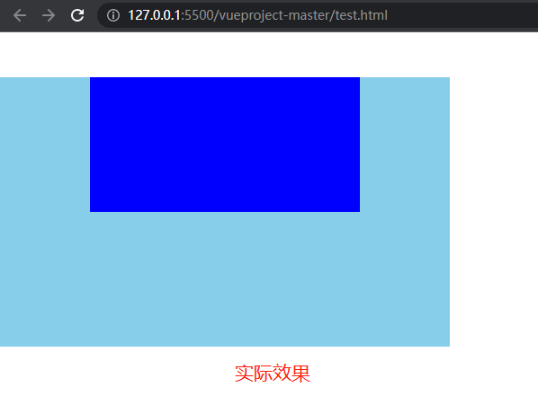
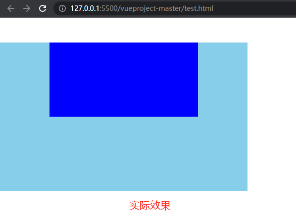
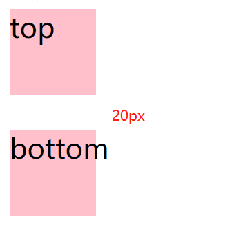
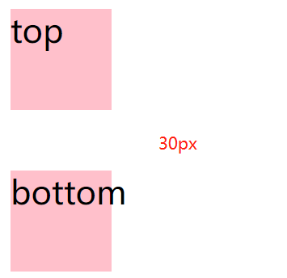
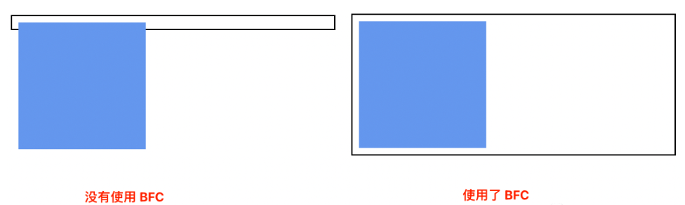

子元素margin-top导致父元素移动的问题
子元素margin-top导致父元素移动的问题
问题描述
今天在修改页面样式的时候，遇到子元素设置margin-top 但是并没有使得子元素与父元素之间产生间隔，而是作用在了其父元素上，导致父元素产生了一个margin-top 的效果。
1 | |
1 | |
 

问题分析
MDN上面是这样说的：
块的上外边距(margin-top)和下外边距(margin-bottom)有时合并(折叠)为单个边距，其大小为单个边距的最大值，这种行为称为边距折叠。
注意：只有上下边距会产生折叠，左右边距不会产生折叠
上下边距会产生折叠的三种情况
1.同一层相邻元素之间
1 | |
· 当margin-bottom和margin-top都为正数时，间距取两者中较大值
· 当都为负数时候，两元素重叠，重叠高度为margin-top和margin-bottom中绝对值较大值
· 当一正一负时，间距为两者之和
解决办法：A B上各自裹上一个BFC。
2.当父子元素之间没有内容
案例见文章开头问题描述。
解决办法：
1.父元素创建块级格式上下文（overflow:hidden）
2.父元素设置上下border（border: 1px solid transparent）
3.父元素设置上下padding（padding: 1px 0）
4.子元素采用浮动float或者绝对定位position：absolute 的方式排列,即为子元素开启BFC。
3.空的块级元素
1 | |
1 | |
结果：期望值：
解决办法：
1.middle元素： clearfix ，原理：在父元素的最前边增加一个空白元素，然后将元素作为块元素来显示。clearfix使用方法详情见https://yang-fan01.gitee.io/2023/05/10/clearfix-%E6%B8%85%E9%99%A4%E6%B5%AE%E5%8A%A8/
2.middle元素创建块级格式上下文（BFC）：overflow：hidden
3.middle元素设置为行内块元素：display: inline-block
4.middle元素设置高度： height: 1px
5.middle元素设置最小高度：min-height: 1px
6.middle元素设置border：border-top: 1px solid transparent
7.middle元素设置padding：padding-top: 1px
BFC
什么是BFC
MDN: 块格式化上下文（Block Formatting Context，BFC）是 Web 页面的可视 CSS 渲染的一部分，是块级盒子的布局过程发生的区域，也是浮动元素与其他元素交互的区域。
下列方式会创建块格式化上下文：
- 根元素（
<html>） - 浮动元素（
float值不为none） - 绝对定位元素（
position值为absolute或fixed） - 行内块元素（
display值为inline-block） - 表格单元格（
display值为table-cell，HTML 表格单元格默认值） - 表格标题（
display值为table-caption，HTML 表格标题默认值） - 匿名表格单元格元素（
display值为table、table-row、table-row-group、table-header-group、table-footer-group（分别是 HTML table、tr、tbody、thead、tfoot 的默认值）或inline-table） overflow值不为visible、clip的块元素display值为flow-root的元素contain值为layout、content或paint的元素- 弹性元素（
display值为flex或inline-flex元素的直接子元素），如果它们本身既不是 flex、grid 也不是 table 容器 - 网格元素（
display值为grid或inline-grid元素的直接子元素），如果它们本身既不是 flex、grid 也不是 table 容器 - 多列容器（
column-count或column-width(en-US) 值不为auto，包括column-count为1） column-span值为all的元素始终会创建一个新的 BFC，即使该元素没有包裹在一个多列容器中 (规范变更, Chrome bug)
BFC的特性
特性1：上下外边距重叠：（同一个 BFC 下的两个相邻块级元素，会发生上下方向的 margin 重叠）。
特性2：浮动元素也会参与计算高度
例子：
1 | |
